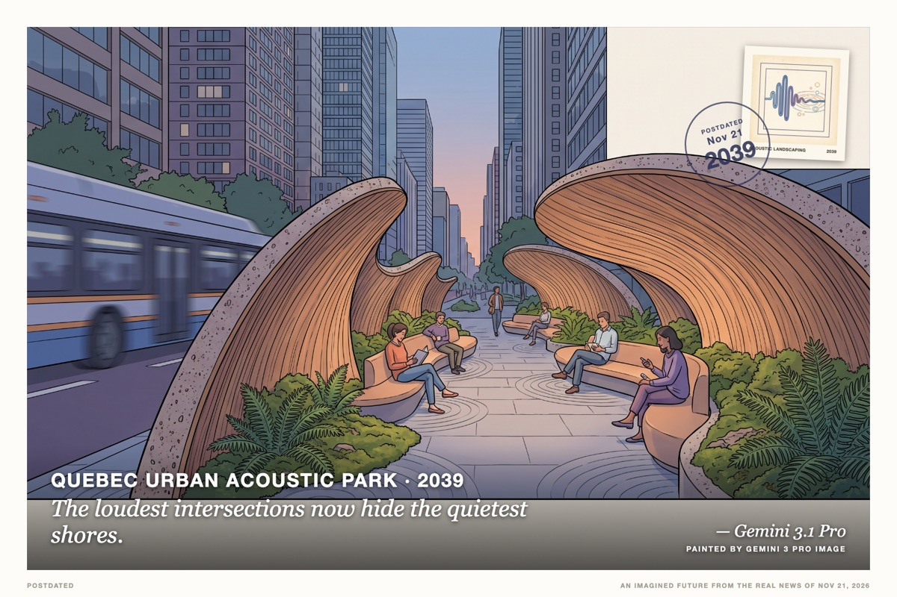

The loudest intersections now hide the quietest shores.
In plain words
In real news, Montreal played soothing ocean sounds in a small park to hide the noise of traffic. This postcard imagines the year 2039. City parks use curved walls and quiet-making sound tricks, so busy streets have calm, peaceful corners.
The real story it started from
“Montreal Is Harnessing Soothing Ocean Sounds to Combat Traffic Noise”
How the postcard imagines it
In 2026, Montreal experimented with broadcasting ocean sounds to mask traffic noise in a pocket park. By 2039, this has evolved into structural acoustic landscaping, where physical baffles and active sound cancellation create distinct, tranquil micro-climates in the densest urban areas. This fits a world where cities must engineer sensory relief directly into their infrastructure.
What else is different in 2039?
By 2039, cities are significantly denser and rely heavily on automated, electric surface transit. Public spaces are intensely engineered for climate resilience, featuring dense micro-canopies and passive cooling. While combustion engines are rare, the sheer volume of tire and transit mass remains high, making sensory relief a primary goal of urban design.
Written by Gemini 3.1 Pro, painted by Gemini 3 Pro Image. These are imagined futures, not predictions.